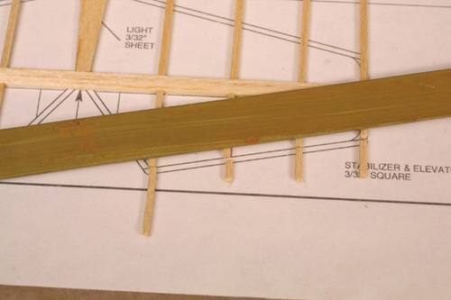
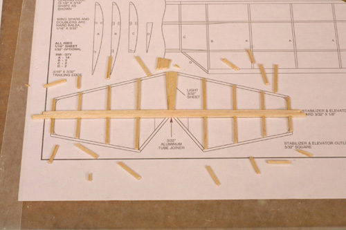
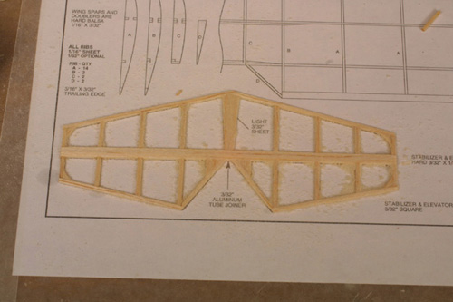
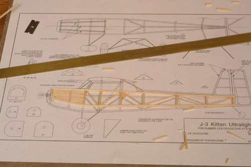
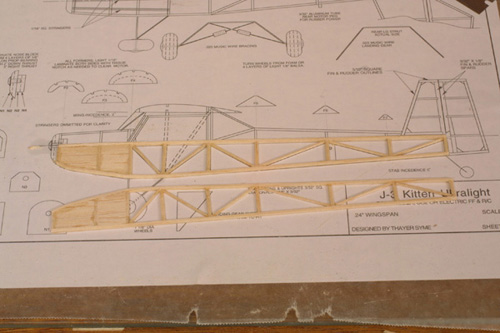
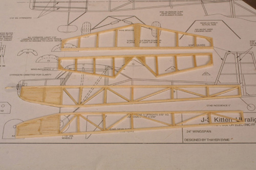
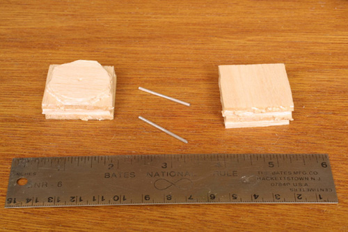
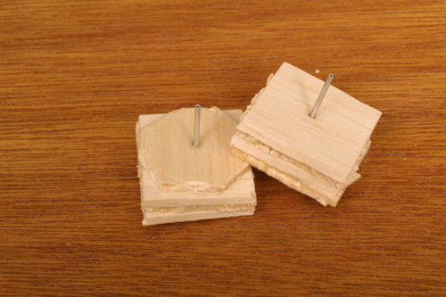
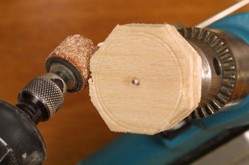
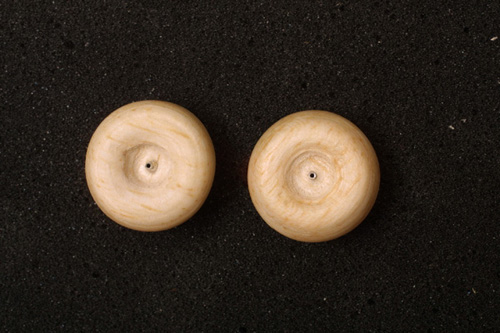

18178 - The Foremost Miter Cut is one of the handiest tools for stick and stringer type construction.

18150 - I framed the horizontal tail surfaces from the inside out.

18153 - A straight edge and a razor blade will help quickly trim the ribs to length.

18155 - All the ribs are trimmed to length. Now I just need to add the outlines and gussets.

18160 - Here I have completed the structure and sanded it smooth.

18162 - It took longer to write about the tail surfaces than to build them!

18169 - The fuselage sides are built much the same way as the tail. First lay down the top longeron, and cut a bunch of uprights a bit longer than necessary.

18163 - Here I have glued the uprights to the top longeron.

18164 - With the uprights trimmed to length, it is time to add the diagonal bracing and the nose sheeting.

18166 - Adding the nose sheeting and diagonals takes just a moment, and has the fuse side almost completed.

18168 - The first fuselage side was done in less than 10 minutes, now on to #2. Be careful to shim the nose sheeting to be flush with the face of one of the fuse sides so you have both a left and a right.

18170 - The total time to frame up both of these fuselage sides, and photograph them along the way, was less than 20 minutes.

18171 - Basic stick and stringer parts, built with a slight twist. I find working from the inside out to be very fast and easy.

15434 - Light 1/8" balsa laminated cross grain forms the rough blanks for the wheels. Lengths of 1/16" aluminum tubing will become the hubs.

15435 - Light 1/8" balsa laminated cross grain forms the rough blanks for the wheels. 1/16" aluminum tubing for the hubs is long enough to hold in a drill chuck.

15437 - I cut off the corners of the square blanks, then use a slow speed hand drill for turning the rough wheel blanks. A sanding drum in a Dremel tool will quickly shape the wheels.

15442 - A raw blank is shown here with a rough turned wheel. Only a few moments is needed to round off the original blank.

15443 - Here are the finished wheels, ready for finishing. Note that I recessed the area around the hubs a bit to leave room to secure the wheels on the axles.
|